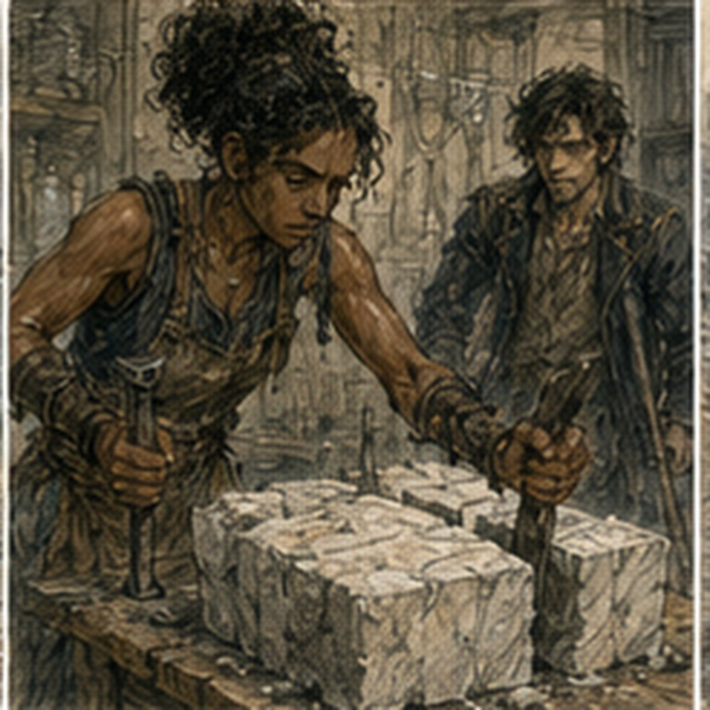
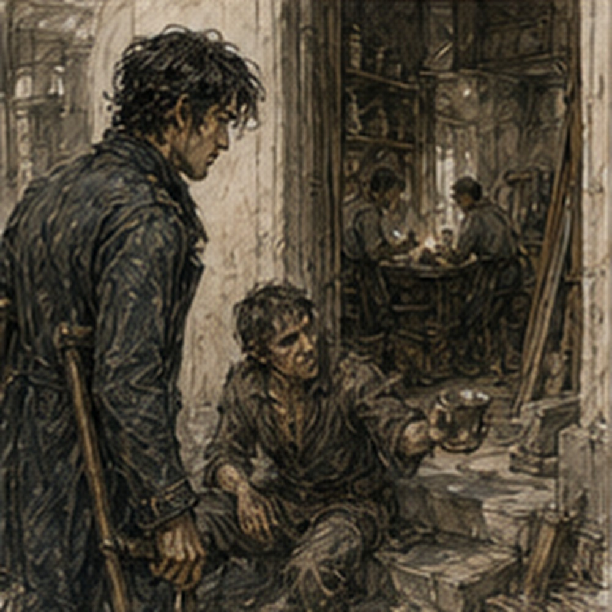

Alden bought the scarf. This was objectionable for several reasons. First, I did not owe him one. Second, he paid three copper for it. Third, it was red. Not the same red. Darker. That should not have mattered. It did.
The cloth seller measured a length against Alden’s outstretched right arm. His left remained tucked close, obedient to the LIGHT USE LEFT tag.
“Two feet?” she asked.
“Three.”
“You only need two.”
“I like three.”
The seller shrugged. People were allowed preferences. Alden paid. Then looked at me.
“What?”
“You owe me three copper.”
“No.”
“One scarf.”
“No.”
“Three copper.”
“No.”
The seller looked between us.
“Married?”
We both said no. She did not look convinced. I left. Alden followed me into the market. The city had absorbed Darrowmere without becoming Darrowmere. That was the first thing I noticed. More wagons. More people asking directions. Three inns had boards outside advertising FLOOR SPACE.
A cooper was charging one copper more for small water casks than he had last week. A woman sold printed sheets titled DARROWMERE ROAD CONDITIONS for half a copper each. I bought one. Alden stared.
“You said rumors were useless.”
“This is printed.”
“That makes it better?”
“No.”
I read it. Half was already wrong. North road listed as open under escort. It had been controlled when we left. Maybe open now. Maybe old information. East road still closed. Two creatures killed. Wrong. At least four recovered. Possible evacuation of whole town. Wrong. Watch requesting archers. Maybe. The bottom said UPDATED MORNING. It was afternoon. I folded it. Alden said, “Worth half a copper?”
“Yes.”
“Why?”
“Now I know what people think they know.”
He considered that.
“Still sounds like a bad purchase.”
“You bought three feet of scarf.”
“That’s useful.”
He tied it around his wrist. The old torn strip disappeared beneath the new cloth. I looked away before the memory could decide it had permission. Alden noticed. He did not ask. That was new too. At the Guild, the Darrowmere board had grown. Not bigger. More organized. Three columns.
RELIEF.
ROAD.
RECOVERY.
No creature contract. Good. Berren’s name had been moved from relief to recovery with a note beside it.
RETURNED. MINOR INJURY.
He had made it back. Lio’s name was nowhere. Cass’s name was nowhere. Dema Rusk’s continuing-practice notice had been pushed down by road assignments. Life continued. The ink-thumb clerk saw me.
“You’re alive.”
“Yes.”
“You owe two days on Antonius Vale’s notice.”
I stopped.
“What notice?”
She slid a folded paper across the desk. Of course. Antonius had not forgotten I existed because monsters happened twelve miles away. The paper was brief.
GREG.
RETURN WHEN AVAILABLE.
WEST STOREHOUSE.
RUSK HAS WORK.
NO URGENCY.
That last line was threatening. Alden read over my shoulder.
“No urgency.”
“Yes.”
“You look worried.”
“Antonius understands urgency.”
“So?”
“If he says there is none, then he has time.”
“That is worse?”
“Potentially.”
The clerk slid another note.
“Hessa Marr.”
I looked at it. Three words.
COME WHEN FUNCTIONAL.
I held up my LIMITED CASTING tag. The clerk said, “Functional enough.”
“You are not a healer.”
“No.”
“Then why say that?”
“Because you’re standing.”
Alden leaned on the counter.
“Anything for me?”
She checked.
“No.”
He looked offended.
“You could make something up.”
“No.”
“Excellent service.”
She looked at his shoulder tag.
“You should get that checked tomorrow.”
“I did today.”
“Then tomorrow.”
He frowned. She had won. Outside, Alden stopped.
“I’m getting my sword done.”
“Done?”
“Edge.”
His blade had taken two ugly contacts on the road and another against the wagon creature.
“Good.”
“Then I’m finding Berren.”
“Why?”
“He was there.”
“So were we.”
“He was somewhere else.”
Right. Different piece of Darrowmere. He wanted comparison. Information. Maybe just someone who had also gone.
“I’ll see you later,” he said.
Not, Are you coming? Not, What are we doing? Good.
“Probably.”
He pointed at me.
“Three copper.”
I walked away. Hessa’s door was open. That was unusual. Not impossible. Just unusual enough that I slowed. A young man stood outside holding a chipped cup and looking miserable. He saw me looking.
“She made me stop.”
“What did you do?”
“Seven.”
“Seven what?”
“Attempts.”
“At?”
He held up the cup. A hairline crack ran from rim to base.
“Repair.”
“Did six work?”
“No.”
“Then why seven?”
He looked offended.
“That’s what she said.”
Good. He left. Normal magical failure. No explosion. No revelation. Just a ruined cup and someone annoyed that effort did not imply improvement. Inside, Hessa was not waiting for me. She was working. A woman stood at the central table with a block of pale stone between both hands. Late twenties, maybe. Work clothes. Gray dust in the seams. Thick fingers. One thumbnail black from an old impact.
Stoneworker before magic. That was obvious. Hessa stood beside her.
“Again,” Hessa said.

The woman placed two fingers against the stone. Mana moved. Cleanly. I felt it before I understood the shape. Not much power. No. That was wrong. Plenty of power. Restrained. A thin pressure entered the block along a line I could not see. The stone clicked. A flake separated from the corner. Small. Precise. The woman swore. Hessa said, “Why?”
“Too deep.”
“How deep?”
“Finger width.”
“It’s half.”
“It feels like a finger.”
“Measure.”
The woman measured. Half. She swore again. Hessa wrote something in a ledger. I stayed by the door. The woman noticed me.
“Waiting?”
“Yes.”
“You can sit.”
There were three chairs. One held tools. One held a coat. One was technically available. I sat. She reset the stone. This time Hessa did not speak. The woman touched. Mana entered. The block split along a shallow groove. Perfectly. Not spectacular. Very good. Actually, better than very good.
The force control was clean enough that my mind immediately became irritating. Fine splitting. Directional vibration. Load mapping. Barrier interaction. Support architecture. If she could feel stress through stone at that resolution, then with proper training she could probably learn to read structural load through walls. Maybe foundations. Maybe fortifications. Maybe collapse points. Combat applications multiplied. Counter-architecture multiplied faster. Hessa said, “Better.”
The woman smiled. That was all.
“What changed?” Hessa asked.
“Stopped trying to push it.”
“And?”
“Followed the weak line.”
“And?”
“Didn’t get greedy.”
Hessa nodded. The woman rubbed stone dust from her hands.
“That enough for today?”
“Yes.”
“Good.”
She packed her tools. I failed to stop myself.
“What do you use it for?”
She looked at me.
“Stone.”
“Yes.”
Silence. Hessa did not help.
“What kind of work?”
“Facing. Steps. Corners. Sometimes lettering if the carver is behind.”
“You can feel stress through the block.”
“Sometimes.”
“How far?”
She shrugged.
“Depends on stone.”
“Granite?”
“Worse.”
“Limestone?”
“Better.”
“Mortared wall?”
She looked at Hessa. Hessa looked at me. The woman said, “Why would I do a wall?” There it was.
“Because if you can trace the load through joined stone, you could probably map where the wall is carrying weight.”
She blinked.
“Yes.”
“And then identify failure points.”
Another blink.
“Yes.”
“And with enough practice you could potentially redirect stress instead of only reading it.”
She stared. Hessa turned a page in her ledger. The woman said, “I make stairs.”
“I understand.”
“No, I make good stairs.”
I stopped. She continued.
“Bad split ruins the corner. Then we cut the whole piece down or throw it into fill. If I can catch the weak line before I strike, I lose less stone.”
“Yes.”
“That pays.”
“Yes.”
“My father’s knees are bad. My brother is fast but careless. I do the finish work.”
“Yes.”
“I don’t want to break walls.”
“I did not say you should.”
She looked at me. I had absolutely implied she should. Not should. Could. Those were different. Mostly. Hessa still said nothing. The woman tied her tool roll.
“I come here twice a month because she keeps me from getting stupid with it.”
Hessa said, “Once last month.”
“Wedding.”
“You said twice.”
“Usually.”
She looked at me.
“You new?”
“No.”
Hessa said, “Yes.” Traitor. The woman smiled.
“Good luck.”
“What’s your name?”
“Rinna.”
No. We already had Captain Ressa. I stopped her.
“Sorry. Again?”
“Rinna.”

Of course. The world reused names too. She left. I watched the door close. Hessa wrote in the ledger. I looked at the stone. Clean split. Half-width corner. Very little waste. Waste. That word arrived before I invited it. She could do more. Obviously. Her control was better than mine had been at twenty-five.
Better than most beginning Barrier workers I had known at thirty. She had the sense. The patience. The feedback loop. She could build. She could become dangerous. Important. Rare. Instead she made stairs. Hessa closed the ledger.
“How long are you going to insult her silently?”
“I am not insulting her.”
“You have the face.”
“What face?”
“The one where someone is failing an exam they did not know you gave them.”
I disliked everyone knowing my faces.
“She is talented.”
“Yes.”
“Very.”
“Yes.”
“You agree.”
“Yes.”
“And she makes stairs.”
“Yes.”
I waited. Hessa waited. Annoying.
“How long has she trained?”
“With me? Nine months.”
“Nine?”
“Twice a month, usually.”
That was absurd.
“No formal foundation?”
“Some apprenticeship casting. Her guild has a stone sense drill.”
“Her control is excellent.”
“Yes.”
“She could be much better.”
“Yes.”
Again. No correction. That was worse.
“Does she know?”
“She knows she is good.”
“No. Does she know what she could do?”
Hessa set the ledger down.
“What could she do?”
I started. Barrier load tracing. Structural diagnostics. Siege support. Counter-collapse. Maybe reinforcement. Maybe shaped fracture. Maybe a dozen things no one here had combined because stoneworkers did not need to. Then I stopped. Because Hessa had not asked what I could imagine. She had asked what Rinna could do. Different question.
“I don’t know.”
“Good.”
She pointed at my wrist.
“Now you.”
That was all. No lesson. No speech about fulfillment. No argument that stairs mattered. Just me. I hated her.
“Limited casting.”
“I can read.”
“Everyone says that.”
“Sit.”
I sat. She checked my eyes. Then wrists. Then had me hold a low Barrier the size of two fingers over the table. Three breaths. Release.
“Again.”
I did. Five breaths. Pressure behind the eyes. Not pain.
“Stop.”
I stopped. She did not ask for another.
“What happened?”
“Pressure.”
“How much?”
“Two.”
“Out of?”
“Ten.”
“Yesterday?”
“Seven after the road.”
“Good.”
“I passed the infirmary check.”
“I am not the infirmary.”
“I noticed.”
She tapped the tag.
“Keep it.”
“For how long?”
“Until tomorrow.”
“That is arbitrary.”
“So is your body.”
“That is not how bodies work.”
She stared. I reconsidered.
“Fine.”
She moved the stone block Ressa had used. I watched the fracture.
“You want to try it.”
“No.”
“You do.”
“I am restricted.”
“That is the first useful thing the tag has done.”
I looked at her.
“You knew I would.”
“I know you.”
That carried more weight than I wanted. I changed subjects.
“Darrowmere samples are coming to Edrin.”
“Already came.”
I looked up.
“When?”
“This morning.”
“What?”
“You were walking.”
Right. World continued.
“What did she find?”
Hessa shrugged.
“I teach mana.”
“You know her.”
“So?”
“You could ask.”
“So could you.”
“I just got back.”
“That sounds temporary.”
I stood. She pointed.
“Sit.”
“Why?”
“Because you are not done.”
“I thought we were.”
“You thought wrong.”
She handed me a cup. Not chipped. Water. I drank. Then waited. A boy arrived. Fourteen, maybe. Too thin. Nervous. He stood in the doorway. Hessa said, “You’re early.”
“My mother said early is better.”
“She’s wrong.”
He looked terrified. Hessa sighed.
“Sit.”
He sat in the chair I had just left. I moved aside. His lesson began with breathing. Nothing magical happened for five minutes. Then he tried to gather mana into his palm. Failed. Tried again. A faint warmth. He smiled. Hessa said, “Again.” Not special. Not bad. Normal.
He would probably take months to do what I had done badly in days at twenty-five. Maybe years. Maybe he would stop. Maybe he would become competent enough to warm metal rivets in his father’s shop. Maybe he would become something else. The distribution. There it was. Not spoken. One cracked cup.
One stoneworker with excellent control and no interest in siege architecture. One boy pleased by warmth in his palm. And me. I suddenly felt more conspicuous than I had in Darrowmere. Hessa looked at me. Noticed. Of course. She did not say anything. Good. I left. At the Guild, an envelope waited. Not Antonius. Edrin Saye. The ink-thumb clerk handed it over.
“She said today if possible.”
I opened it.
GREG.
SOUTH CANAL SEAL OPENED.
CONTENTS IDENTIFIED ENOUGH TO BECOME MORE ANNOYING.
YOUR QUESTIONS MAY NOW BE USEFUL.
DO NOT TOUCH ANYTHING.
EDRIN.
I read it twice. Alden was somewhere getting his sword repaired and finding Berren. Antonius had work waiting without urgency. Hessa had told me not to experiment. Darrowmere samples had reached Edrin. And the South Canal sacks, which had nearly gotten people killed before any monsters existed, were finally open. There. The world had chosen. I folded the note. The clerk said, “Going?”
“Yes.”
“Today?”
I looked at the light through the Guild windows. Still afternoon. My body hurt less. My channels were limited. I had eight copper minus food, paper, and dignity. Edrin had specifically written do not touch. That was encouraging.
“Yes.”
The clerk nodded.
“South Canal.”
“I remember.”
“Good.”
I started toward the door. Then stopped.
“What happened to the Darrowmere samples?”
She looked at me.
“Edrin has them.”
“I know.”
“That is what happened.”
“Anything else?”
“No.”
Good. Separate problems until evidence connected them. I left for South Canal. Behind me, the Darrowmere board kept changing without permission.